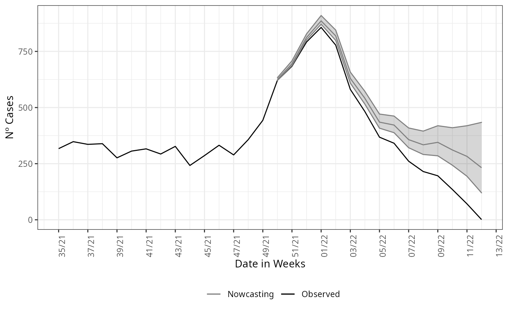
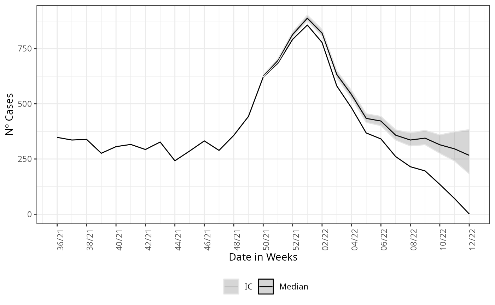

Structured data
Rafael Lopes & Leonardo Bastos
Source:vignettes/articles/structured_data.Rmd
structured_data.RmdAs in the Get Started we start by loading the package and its lazy data, by:
Non-structured data
Th Get Started example it is a non-strucutured data estimation, here we give a more detailed on the description of this type of data and how it can change the nowcasting estimation.
Now we call the nowcasting function, it has by default the parametrization to take the data and estimate with a non-structured data form. The estimate fits a negative binomial distribution, \(NegBinom(\lambda_{t,d}, \phi)\), to the cases count at time \(t\) with delay \(d\), \(\phi\) is the dispersion parameter. The rate \(\lambda_{t,d}\) is then parameterized in a log-linear format by a constant term added by structured delay random effects and structured time random effects. Hence, the model is given by the following:
\[\begin{equation} Y_{t,d} \sim NegBinom(\lambda_{t,d}, \phi), \\ \log(\lambda_{t,d}) = \alpha + \beta_t + \gamma_d, \\ t=1,2,\ldots,T, \\ d=1,2,\ldots,D, \end{equation}\]
where the intercept \(\alpha\) follows is Gaussian distribution with a very large variance, \(\beta_t\) is follows a second order random walk with precision \(\tau_\beta\), \(\gamma_d\) a first-order random walk with precision \(\tau_\gamma\). The model is then completed by INLA default prior distributions for \(\phi\), \(\tau_\beta\), and \(\tau_\gamma\). See nbinom, rw1 and rw2 INLA help pages.
The call of the function is straightforward, it simply needs a
dataset as input, here the LazyData loaded in the namespace
of the package. The function has 3 mandatory parameters,
dataset for the parsing of the dataset to be nowcasted,
date_onset for parsing the column name which is the date of
onset of symptoms and date_report which parses the column
name for the date of report of the cases. Here this columns are
“DT_SIN_PRI” and “DT_DIGITA”, respectively.
nowcasting_bh_no_age <- nowcasting_inla(dataset = sragBH,
date_onset = DT_SIN_PRI,
date_report = DT_DIGITA)
head(nowcasting_bh_no_age$total)
#> # A tibble: 6 × 7
#> Time dt_event Median LI LS LIb LSb
#> <int> <date> <dbl> <dbl> <dbl> <dbl> <dbl>
#> 1 17 2021-12-13 625 621 633 623 627
#> 2 18 2021-12-20 695 688. 708 692 698.
#> 3 19 2021-12-27 812 801 830 807 817
#> 4 20 2022-01-03 886 871 907. 880 893
#> 5 21 2022-01-10 819 798 845 811 826
#> 6 22 2022-01-17 632 609 660 623 641This calling will return only the nowcasting estimate and its
Confidence Interval (CI) for two different Credible interval,
LIb and LSb are the max and min CI,
respectively, with credibility of 50% and LI and
LS are the max and min CI, respectively, with credibility
of 95%.
nowcasting_inla has the option to return the curve for
when the nowcasting estimate was set the window of action of the model,
if the data.by.week parameter is flagged as
TRUE it returns on the second element of the output list
the summarized data by week.
nowcasting_bh_no_age <- nowcasting_inla(dataset = sragBH,
date_onset = DT_SIN_PRI,
date_report = DT_DIGITA,
data.by.week = T)
head(nowcasting_bh_no_age$data)
#> # A tibble: 6 × 3
#> date_report date_onset Delay
#> <date> <date> <dbl>
#> 1 2020-02-24 2020-02-03 3
#> 2 2020-01-27 2020-01-13 2
#> 3 2020-04-06 2020-03-23 2
#> 4 2020-03-23 2020-03-16 1
#> 5 2020-04-06 2020-03-09 4
#> 6 2020-04-13 2020-03-30 2This element it is the counts of cases by the amount of delay. It is known as the delay triangle, if we table the delay amount against the data of onset of first symptoms, it can see how is the pattern of the delay for the cases.
library(dplyr)
data_triangle <- nowcasting_bh_no_age$data |>
filter(Delay < 30) |>
arrange(desc(Delay))
delay_triangle<-table(data_triangle$date_onset,
rev(data_triangle$Delay),
dnn = list("Date of Onset", "Delay"))
head(delay_triangle)
#> Delay
#> Date of Onset 0 1 2 3 4 5 6 7 8 9 10 11 12 13 14 15 16 17 18 19 20 21
#> 2019-12-23 3 4 7 4 0 1 1 0 0 0 0 0 0 0 1 0 0 0 0 0 0 0
#> 2019-12-30 1 4 10 4 0 0 0 1 0 0 0 0 0 0 0 0 0 0 0 0 0 0
#> 2020-01-06 0 3 5 6 0 4 1 0 0 0 0 0 0 0 0 0 1 0 0 0 0 0
#> 2020-01-13 0 5 11 6 0 3 0 0 0 0 0 0 0 0 0 0 1 1 0 0 0 0
#> 2020-01-20 1 5 3 3 0 5 1 0 0 0 0 0 0 0 0 0 0 0 0 0 0 0
#> 2020-01-27 0 7 4 5 0 2 1 0 0 0 0 0 0 0 0 0 1 0 0 0 0 0
#> Delay
#> Date of Onset 22 23 24 25 26 27 28 29
#> 2019-12-23 0 0 0 0 0 0 0 0
#> 2019-12-30 0 0 0 0 0 0 0 0
#> 2020-01-06 0 0 0 0 0 0 0 0
#> 2020-01-13 0 0 0 0 0 0 0 0
#> 2020-01-20 0 0 0 0 0 0 0 0
#> 2020-01-27 0 0 0 0 0 0 0 0We just look at the amount of cases with 30 weeks of delay or less, it is the default maximum delay considered at nowcasting estimation.
If this element is groped by and summarized by the onset of symptoms
date, here DT_SIN_PRI, it is the epidemiological curve
observed. To example it, we plot the estimate and the epidemiological
curve all together.
library(ggplot2)
dados_by_week <- nowcasting_bh_no_age$data %>%
filter(date_onset >= (Sys.Date()-270)) %>%
group_by(date_onset) %>%
summarise(n = n())
nowcasting_bh_no_age$total |>
ggplot(aes(x = dt_event, y = Median, col = 'Nowcasting')) +
geom_line(data = dados_by_week, aes(date_onset, y = n, col = 'Observed'))+
geom_ribbon(aes(ymin = LI, ymax = LS, col = NA), alpha = 0.2, show.legend = F)+
geom_line()+
theme_bw()+
theme(legend.position = "bottom", axis.text.x = element_text(angle = 90)) +
scale_color_manual(values = c('grey50', 'black'), name = '')+
scale_x_date(date_breaks = '2 weeks', date_labels = '%V/%y', name = 'Date in Weeks')+
labs(x = '', y = 'Nº Cases')
Structured data, Age
For the structured data the nowcasting_inla() fits again
a Negative binomial distribution to the cases count at time \(t\) with delay \(d\). Differently, from the non-structured
case the model now gives random effects to the delay distribution and
and time distribution by each of the age-class chosen by the user to
break the data. The model has the form now:
\[\begin{equation}Y_{t,d,a} \sim NegBinom(\lambda_{t,d,a}, \phi), \\ \log(\lambda_{t,d,a}) = \alpha_a + \beta_{t,a} + \gamma_{d,a}, \\ \quad t=1,2,\ldots,T, \\ d=1,2,\ldots,D, \\ a=1,2,\ldots,A, \end{equation}\]
where each age class, \(a\), has an intercept \(\alpha_a\) following a Gaussian distribution with a very large variance, the time-age random effects, \(\beta_{t,a}\), follow a joint multivariate Gaussian distribution with a separable variance components an independent Gaussian term for the age classes with precision \(\tau_{age,\beta}\) and a second order random walk term for the time with precision \(\tau_{\beta}\). Analogously, the delay-age random effects, \(\gamma_{d,a}\), follow a joint multivariate Gaussian distribution with a separable variance components an independent Gaussian term for the age classes with precision \(\tau_{age,\gamma}\) and a first order random walk term for the time with precision \(\tau_{\gamma}\). The model is then completed by INLA default prior distributions for \(\phi\), \(\tau_{age,\beta}\), \(\tau_{age,\gamma}\), \(\tau_{\beta}\) and \(\tau_\gamma\). See nbinom, iid, rw1 and rw2 INLA help pages.
This new model corrects the delay taking into account the effects of
age classes and the interactions of each age class between time and also
delay. Now the model needs a flag indicating which is the column on the
dataset which will be used to break the data into age classes and how
the age classes will be split. This is given by the parameters
age_col and bins_age. We pass three additional
parameters, data.by.week to return the epidemiological
curve out of window of action of nowcasting estimate and
return.age to inform we desire a nowcasting result in two
ways, the total aggregation estimate and the age-stratified estimate.
The calling of the function has the following form:
nowcasting_bh_age <- nowcasting_inla(dataset = sragBH,
bins_age = "10 years",
data.by.week = T,
date_onset = DT_SIN_PRI,
date_report = DT_DIGITA,
age_col = Idade)Each of the estimates returned by nowcasting_inla has
the same form as in the non-structured case. On the nowcasting
estimates, it returns a data.frame with the posterior edian and 50% and
95% credible intervals, (LIb and LSb) and (LI and LS) respectively.
library(ggplot2)
dados_by_week <- nowcasting_bh_age$data |>
filter(date_onset >= (Sys.Date()-270)) |>
group_by(date_onset) %>%
summarise(n = n())
nowcasting_bh_age$total |>
ggplot(aes(x = dt_event, y = Median, col = 'Median'))+
geom_line()+
geom_line(data = dados_by_week, aes(date_onset, y = n))+
geom_ribbon(aes(ymin = LI, ymax = LS, col = 'IC'), alpha = 0.2)+
theme_bw()+
theme(legend.position = "bottom", axis.text.x = element_text(angle = 90))+
scale_color_manual(values = c('grey90', 'black'), name = '')+
scale_x_date(date_breaks = '2 weeks', date_labels = '%V/%y', name = 'Date in Weeks')+
labs(x = '', y = 'Nº Cases')